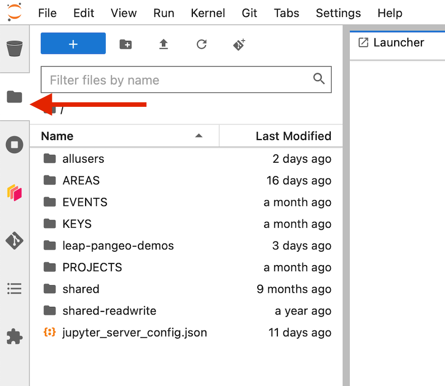
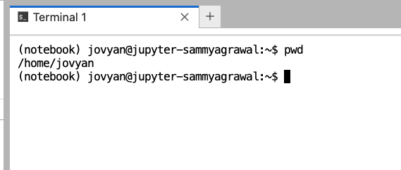

Where Data Lives¶
Data can live in one of three main places:
-
LEAP's JupyterHub, which includes:
- Shared "cloud buckets", one for data being actively processed and another for data with longer lifetimes.
- User directories for very small amount of data and code used privately.
-
LEAP-owned cloud storage (our OSN pod, co-owned with the M2LINES project)
-
External or HPC Filesystem (private, local)
As a very general guideline:
-
Data being imported might arrive from external sources (e.g. a large numerical simulation on an HPC system)
-
Data being processed actively during analytical science workflows normally lives in the LEAP Cloud Buckets associated with the Hub.
-
Data being shared with third parties normally lives in the OSN Pod, linked to the data catalog.
LEAP Cloud Buckets¶
Tip
Google Cloud's costs are structured to make it free and easy to move data into the buckets, but there are high egress fees for taking data out of GCP Infrastructure. Taking data out means both writing from GCP to outside and reading from an external source like an HPC.
LEAP's JupyterHub provides users two cloud buckets in which to store data.
gs://leap-scratch/- Temporary Storage deleted after 7 days. Use this bucket for testing and storing large intermediate results. leap-scratch is also a great staging area to use while ingesting data to some other permanent location.gs://leap-persistent/- Persistent Storage. Use this bucket for storing results you want to share with other members or access consistently from the Hub.
Files stored on each of those buckets can be accessed by all LEAP members, so be conscious in the way you use these.
- Do not put sensitive information (passwords, keys, personal data) into these buckets!
- When writing to buckets only ever write to your personal folder! Your personal folder is a combination of the bucketname and your github username (e.g. `gs://leap-persistent/your-user-name/').
The JupyterHub is automatically authenticated to read from any of these buckets. See Authentication for details on how to access buckets from 'outside' the JupyterHub.
GCS is where to put data if:
- You want to move data from your JupyterHub home directory to the cloud.
- You don't need the data to be accessed outside of the JupyterHub.
- This data is a work-in-progress and might be regenerated or modified as you do your science.
Tip
Use the LEAP GCS buckets when you are actively doing science using the JupyterHub. If you wish to share some kind of finished product with the world, it is best to "publish" the data by moving outside GCS into OSN or Zenodo.
Your JupyterHub User Directory¶
When you open your hub, you can navigate to the file browser and see all the files in your user directory

Your user directory behaves like a typical UNIX filesystem. If you save a file from a notebook, you will see it appear in the file browser (you might have to wait a few seconds or press refresh). You can also use the terminal to navigate and manipulate files as you would on your local machine.

Note
Unlike most systems, on a JupyterHub every user sees '/home/jovyan' as their root directory, but the functionality is similar. These are your own files and they cannot be seen/modified by anyone else (except admins).
Your home directory is intended only for notebooks, analysis scripts, and small datasets (< 1 GB). Large datasets should stored in cloud buckets. Please try to keep your home directory size to 25GB. To check how much space you are using in your home directory open a terminal window on the hub and run du -h --max-depth=1 ~/ | sort -h.
See the Hub Usage Alert for guidance on reducing storage.
Warning
Home directories have a hard limit of 100GB, which may decrease without warning.
LEAP Cloud Buckets¶
LEAP uses two Google Cloud buckets (leap-persistent and leap-scratch) and also has an allocation of storage on an Open Storage Network (OSN) pod.
- For "internal" use, i.e. during the research process, use the JupyterHub in conjunction with dedicated LEAP buckets in Google Cloud Storage (GCS).
- For publishing or sharing data externally (i.e. in conjunction with a released paper), we recommend pushing to OSN Pods.
Note
A common workflow is for data to be private --> get ingested to LEAP GCS --> OSN Pods for publication.
Open Storage Network¶
The Open Storage Network is distributed cloud storage for the research community. LEAP helped the M2LINES project buy a ~1 petabyte OSN pod. OSN allows s3-like cloud storage that has no egress fees, which means that you can share data with the public or outside colaborators without any cost per request! The downsides are that storage is large but finite, and that authentication is not as seamless as the GCS buckets.
The pod is divided into projects and buckets. A project can have multiple buckets. There are currently 2 principal Projects on the Pod (as well as a shared bucket with the m2lines project):
'leap-pangeo': Used for data ingestion across the m2lines and LEAP community- Buckets:
'leap-pangeo-inbox': Write access can be shared with users who want to add data e.g. from an HPC center'leap-pangeo-manual': No write access for users'leap-pangeo-pipeline': No write access for users
- Buckets:
'leap': Used for project data and publications from the LEAP project- Buckets:
'leap-pubs': No write access for users- ... various project buckets
- Buckets:
Data can be transferred from leap-pangeo-inbox to leap-pangeo-manual with this rclone github action.
OSN is where data should live if if:
- You want your data to be publicly accessible outside of the Jupyter-Hub.
- You need to move data from your Jupyter-Hub home directory to more persistent storage.
To migrate data to OSN, please contact the data-and-compute team on slack. They will contact the OSN pod admin and share bucket credentials for the 'leap-pangeo-inbox' bucket. More details are provided under authentication.
Summary - OSN vs GCS¶
GCS:
- You want to move data from your JupyterHub home directory to the cloud.
- You don't need the data to be accessed outside of the JupyterHub.
- This data is a work-in-progress and might be regenerated or modified.
OSN:
- You want your data to be publicly accessible outside of the Jupyter-Hub.
- You need to move data from your Jupyter-Hub home directory to more persistent storage.
Private Storage - HPC or External Filesystems¶
There are scenarios in which it probably does not make sense to migrate your data into the cloud!
- If you have a powerful HPC system that produces extremely large volumes (petabytes) of data for processing, the LEAP infrastructure is currently not equipped to handle this.